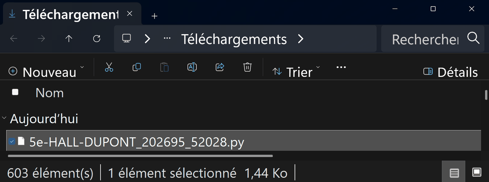
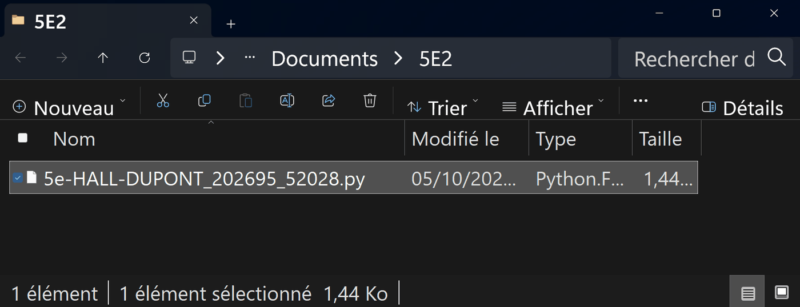

🎯 Ta mission : imaginer le voyant d'une case du hall de la Brooklyn Middle School, le valider par des tests, puis écrire la règle SI qui l'allume en rouge ou en vert.
🖥️ Ordinateur partagé (salle de techno, CDI) : un autre élève qui ouvre cette page sur la même session verra tes réponses. Quand tu as fini : imprime en PDF si tu veux garder une trace, puis clique sur « 🗑 Effacer ma sauvegarde ».
🔀 Mon parcours :
Parcours affiché : tous.
Le mode essentiel masque les corrections et les compléments : il ne reste que les consignes et les exercices.
📖 Rappel : la situation et ton hypothèse
5eThème 3 — Création, conception, réalisation, innovations : des objets à concevoir et à réaliser5e_C7.15e_C8.35e_C9.3Socle : D2 · D3 · D4 · D5New York⏱ 3 séances de 55 min
📚 Les trois compétences travaillées — en toutes lettres
Ce ne sont pas des familles, ce sont trois compétences précises du programme 2024,
citées mot pour mot :
5e_C7.1
Suivre un processus de conception et de réalisation dans une durée, avec des tâches identifiées.
5e_C8.3
Vérifier le comportement et les performances d'un objet technique en suivant un protocole fourni.
5e_C9.3
Réaliser et mettre au point un programme simple commandant un OST.
Cette séquence annonçait auparavant « C7 · C8 · C9 »,
c'est-à-dire douze compétences pour en servir trois. Elle n'en revendique plus que ce qu'elle
produit : le choix d'un matériau, l'assemblage d'un prototype ou la modification d'un programme
fourni relèvent d'autres codes, qui restent à créer.
Référence normative : programme de technologie du cycle 4, BO n°9 du 29 février 2024. Codification opérationnelle : les codes 5e_C7.1 · 5e_C8.3 · 5e_C9.3 servent à ranger les séquences ; ils ne viennent pas du programme officiel.
📖 Situation déclenchante
Le hall de la Brooklyn Middle School, huit heures moins dix. Deux cents élèves entrent en
huit minutes. Contre le mur, vingt casiers ouverts pour poser les sacs — pas de porte, pas de
serrure, juste des cases carrées. Le problème n'est pas qu'il n'y a pas de place : c'est qu'on
ne voit pas laquelle est libre. Il faut s'approcher, se pencher, regarder dedans. Alors les
élèves posent leur sac par terre, devant. Et à huit heures moins cinq, on marche dessus.
M. Alvarez, qui s'occupe du bâtiment, a compté : trois chutes en un mois. Il a
demandé des casiers fermés — trop cher. Il vient te voir avec une idée à lui :
« Je ne veux pas de porte. Je veux juste un petit voyant au-dessus de chaque case :
vert, elle est libre, tu peux poser ton sac ; rouge, elle est prise, passe à la
suivante. Qu'on le voie depuis l'entrée, sans s'approcher. »
Voilà l'objet que tu vas construire : un voyant vert ou rouge au-dessus d'une case du
hall. Rien de plus. Il faut qu'il sache si la case est occupée, et qu'il le dise à trois mètres
de distance.
Ce genre d'objet porte un nom dans le métier : on l'appelle
un indicateur d'occupation. Tu retrouveras ce mot dans les gares, les parkings et les
toilettes d'avion — partout où il faut dire « libre » ou « occupé » sans ouvrir
la porte.
Les casiers du hall : depuis l'entrée, impossible de voir lesquels sont libres. Alors les sacs finissent par terre. Image générée par IA (Canva).
❓ Problématique
Comment améliorer un objet scolaire : imaginer, valider par des tests, puis écrire une règle de programme simple ?
💡 Avant de commencer, ton idée à toi
Sans réfléchir longtemps : comment ton voyant peut-il savoir qu'un sac est posé dans la
case ? Écris ta première idée, même si elle te paraît bête. On la relira à la fin, et tu
verras le chemin parcouru.
💾 Tes réponses sont enregistrées dans ce navigateur, à chaque
modification.
🎫 Billet d'entrée — trois questions, sans note
Cette séquence s'appuie sur ce que tu as fait en 6e et à l'école. Elles ne comptent pas dans ta progression et ne sont pas notées — « je ne sais pas encore » est une réponse utile.
🔁 Le contrat de la séquence
FAIRE pour comprendre : tu commences par APPUYER sur le bouton du simulateur (activité 0) et regarder la LED changer — avant toute règle écrite.
COMPRENDRE : les « À retenir » nomment les concepts : capteur, état, règle SI.
REFAIRE pour comprendre encore : tu réinvestis la même règle SI sur un NOUVEAU cas (le casier de bibliothèque) — même squelette, autre habit.
🔀 Deux façons de vivre la séquence
🅱 En simulation : le simulateur de place de l'activité 0 fonctionne dans la page, sans rien installer, et l'éditeur Python, dans la page lui aussi, prend le relais pour le programme (Vittascience reste possible, par un lien). C'est le parcours principal.
🅲 Sur papier : croquis et tableau de tests à compléter au cahier — mêmes questions, mêmes validations. Le simulateur reste utilisable pour observer.
Aucun parcours ne retire de question. Le sélecteur en haut de page masque seulement
ce qui ne te concerne pas ; tout ce qui est évalué reste demandé à tout le monde.
Ma progression : 0 / 6 activités validées
🗺 Où j'en suis — 0 / 6 activités validées
🗺 Où j'en suis — les 6 activités de cette séquence
Chaque activité validée se colore ici. Rien ne se perd si tu t'arrêtes en route.
🧭 Séance 1 — Faire, puis imaginer
Question directrice : comment un voyant peut-il savoir qu'une case est occupée, et quelles solutions imaginer pour le construire ?
Au programme : le simulateur de place (activité 0, environ 10 min), puis deux solutions imaginées et un choix argumenté (activité 1, environ 30 min). Avec l'ouverture, la séance tient dans 55 min.
Place : libre · LED :
Fais au moins deux allers-retours (poser PUIS enlever, deux fois).
🖐️ Activité 0 — FAIRE d'abord : le simulateur de place ⏱ ~10 min
Consigne : AVANT toute règle écrite, pose et enlève un sac plusieurs fois, au simulateur juste au-dessus. Observe la LED.
Q1 — Quand la place est OCCUPÉE, la LED est…
Q2 — Qu'est-ce qui JOUE LE RÔLE du capteur dans ce simulateur ?
📖 Correction complète (à ouvrir APRÈS tes essais)
Place occupée → LED rouge ; place libre → LED verte. Le bouton joue le rôle du capteur : il DÉTECTE l'état (sac posé ou non). La LED est l'actionneur : elle AFFICHE la décision. Tu viens de faire fonctionner, à la main, la chaîne capteur → décision → affichage.
À retenir (COMPRENDRE) : un capteur détecte un état, une règle SI décide, un actionneur (LED) montre la décision. Tu l'as vécu avant de le nommer.
🔧 Activité 1 — Imaginer (5e_C7.1)⏱ ~30 min
1a — Ton planning
#
Tâche
min
1
20
2
25
3
20
4
40
1b — Tes deux solutions et ton choix
🪜 Version étayée — des phrases à compléter
Le niveau attendu est exactement le même qu'avec la consigne libre : ces débuts
de phrases retirent l'obstacle de la rédaction, pas l'exigence.
Solution A : ____ . Solution B : ____ .
Elles sont vraiment différentes parce que ____ .
Je choisis ____ , parce que ____ et parce que ____ .
📖 Correction complète
Exemples : A — bouton-poussoir sous la tablette + LED ; B — capteur de distance qui « voit » le sac. Choix argumenté par un critère nommé (simplicité, prix, solidité dans un hall fréquenté). Organiser → plusieurs idées → choix avec critères : une seule idée n'est pas une conception.
À retenir : organiser → plusieurs idées → choix avec critères.
🧭 Séance 2 — Valider, puis programmer
Question directrice : le voyant fait-il ce qu'on attend, et comment écrire la règle qui le commande ?
Au programme : la grille de validation, au simulateur (activité 2, environ 25 min), les quatre gestes de l'éditeur Python, puis la règle SI en algorigramme et en programme (activité 3, environ 30 min).
🧪 Activité 2 — Valider (5e_C8.3)⏱ ~25 min
PRÉDIS chaque résultat, puis VÉRIFIE-le au simulateur de place (en tête de la séance : pose / enlève le sac) et compare, directement dans la grille : écris d'abord l'attendu, puis dis si le simulateur le confirme (conforme : ce que tu observes est ce que tu attendais). Prends enfin la décision globale, sur la dernière ligne.
La grille de validation de la place de rangement, à compléter
Test
Attendu
Le simulateur confirme-t-il ?
Poser le sac
Enlever le sac
Visible à 3 m
Oui (LED assez brillante)
Décision globale sur la place de rangement
📖 Correction complète
La grille, ligne par ligne : LED rouge · LED verte · Oui · Oui · Oui, puis Validée. Chaque test a son résultat attendu ÉCRIT AVANT d'essayer.
Poser le sac → la place devient occupée → attendu : LED rouge (rouge : la place est prise) → le simulateur montre rouge → Oui, conforme. Piège « LED verte » → le vert dit « libre, tu peux poser ton sac » : c'est l'inverse d'une place occupée.
Enlever le sac → la place redevient libre → attendu : LED verte → le simulateur montre vert → Oui. Piège « LED rouge » → une fois le sac enlevé, plus rien n'appuie sur le capteur : la place est libre.
Visible à 3 m → attendu : la LED se voit depuis le hall → elle est assez brillante → Oui.
Piège « Non », sur une ligne où l'observé est l'attendu → « conforme » veut dire : ce que j'observe est ce que j'attendais. Si ta prédiction était fausse, c'est elle qu'on corrige, pas le simulateur.
Décision globale → les trois tests sont conformes → Validée. Piège « À améliorer » → aucun test n'a échoué : il n'y a rien à corriger pour l'instant. Piège « Rejetée » → on rejette un objet qui échoue à un test important ; ici, tout passe.
Conclusion : on valide si les tests importants réussissent — attendu d'abord, observé ensuite.
À retenir : on valide si les tests importants réussissent — attendu d'abord, observé ensuite.
🧰 Avant l'activité 3 (échauffement) — les quatre gestes de l'éditeur Python
L'éditeur Python est dans la page, à chaque activité qui fait écrire un programme : rien à ouvrir, rien à installer, et il marche sans Internet. Entraîne-toi d'abord ici, sur un petit programme d'essai : l'éditeur d'essai, à côté des gestes (dessous, sur un petit écran), est un vrai, le même que dans l'activité 3. Fais les quatre gestes dans l'ordre : chacun se coche quand il est réussi. Ensuite, dans l'activité 3, tu referas les mêmes avec ton vrai programme, et il ne se perdra pas — ni pendant la séance, ni la semaine suivante.
☐1. Écrire et exécuter. Dans la zone de code, remplace Camille par ton prénom (garde les guillemets), puis clique ▶ Exécuter. Tab décale de 4 espaces. Ce que tu dois voir : dans la console, « Bonjour », ton prénom, puis « 2 + 3 = 5 », puis « ✔ Terminé ». La première fois, Python met une seconde à se préparer.Et si tu te trompes ? Efface un guillemet, puis ▶ : la console explique l'erreur, et sa ligne est marquée dans la marge. Remets le guillemet. ⏹ Arrêter interrompt un programme qui tourne sans fin.
☐2. Nommer. Dans 📄 Nom du fichier, au-dessus de la zone, remplace TON NOM par ton nom : 5e-HALL-essai-DUPONT. Un fichier sans nom est introuvable la semaine suivante. Ce que tu dois voir : ton nom dans le champ, juste avant « .py ». DUPONT est un exemple : mets ton nom.
☐3. Sortir. La page garde ton programme sur cet ordinateur seulement : pour l'emporter, clique ⬇ Télécharger mon .py. Ton fichier arrive dans Téléchargements, au nom que tu lui as donné — le navigateur l'y range sans rien demander. Range-le tout de suite dans Documents › ta classe, avec l'Explorateur de fichiers : c'est expliqué pas à pas, avec les captures, plus bas, sous l'éditeur. Ce que tu dois voir : sous les boutons, la phrase « ⬇ … part dans ton dossier Téléchargements », puis, dans l'Explorateur, ton fichier dans Documents › 5E2 (ta classe).
☐4. Retrouver. Fais comme si c'était la semaine suivante : clique ↺ Remettre le code de départ, deux fois — ton prénom disparaît. Puis clique 📂 Ouvrir mon .py : dans la fenêtre « Ouvrir » de Windows, clique Documents dans la colonne de gauche, double-clique le dossier de ta classe — celui où tu l'as rangé au geste 3 —, clique ton fichier, puis Ouvrir. Ce que tu dois voir : ton prénom revient dans le programme, et sous les boutons, « 📂 … est ouvert : ton programme est revenu dans l'éditeur ». Tu l'as cherché là où tu l'avais rangé : c'est tout le secret.
Pas de bouton ▶ Exécuter sous la zone (JavaScript coupé, page imprimée) ? Lis les quatre gestes : tu les feras dans l'activité 3, avec le lien Vittascience.
🪟 Le geste 3 pas à pas : ranger ton fichier avec l'Explorateur de Windows
Ouvre l'Explorateur de fichiers (le dossier jaune de la barre des tâches, ou les touches Windows + E), clique Téléchargements, clique ton fichier une fois, puis Ctrl + X. Va dans Documents, entre dans le dossier de ta classe (exemple : 5E2), puis Ctrl + V. Si ce dossier n'existe pas encore, crée-le d'abord : dans Documents, Nouveau → Dossier, tape le nom de ta classe, puis Entrée.

Ce que tu dois voir : ton fichier .py dans Téléchargements. Clique-le une fois, puis Ctrl + X pour le couper. Sur cette capture, le fichier vient de Vittascience, qui ajoute des chiffres à la fin du nom ; celui de la page porte simplement le nom que tu as tapé (5e-HALL-DUPONT). La fenêtre est rétrécie pour ne montrer que ce fichier.Si le dossier de ta classe n'existe pas encore : dans Documents, clique Nouveau puis Dossier. Un dossier apparaît, son nom surligné : tu peux taper le tien. La fenêtre est rétrécie : tes autres dossiers ne sont pas montrés.

Comment savoir que c'est fait : en haut, Documents › 5E2 ; dans la liste, ton fichier .py. Il n'est plus dans Téléchargements : il est rangé. Retiens ce chemin : c'est là que tu le chercheras au geste 4. Sur la capture, le nom porte les chiffres de Vittascience.
Au geste 4, la fenêtre « Ouvrir » est celle de ton poste : Documents est dans sa colonne de gauche, et le dossier de ta classe dedans — le même chemin qu'ici.
Avec Vittascience (facultatif, Internet nécessaire). Le lien « Vittascience, si tu préfères » ouvre son éditeur en mode mixte (blocs et Python) : construis, Exécuter → le crayon, 5e-HALL-TON NOM → la disquette, Télécharger → Téléchargements → Documents › ta classe. Pour reprendre : le dossier (Ouvrir) → Depuis votre appareil → Ouvrir… → Documents › ta classe → ton fichier → Oui : les blocs et le Python reviennent.
💻 Activité 3 — La règle SI en schéma, puis en programme (5e_C9.3)⏱ ~30 min
🌐 Sans connexion, tout se fait dans la page : l'éditeur Python est intégré à l'activité. Seul le lien « Vittascience, si tu préfères » demande Internet.
3a — Remets l'algorigramme en ordre (représentation schématique)
Ce que le simulateur FAIT se dessine. Numérote les blocs de 1 à 5 :
⬭ débutDÉBUT (au démarrage de l'indicateur)
▭ traitementLire le capteur (sac posé ou non)
◇ décisionPlace occupée ?
▭ action OUIOUI → LED rouge
▭ action NONNON → LED verte, puis revenir à la lecture
📖 Correction bloc par bloc
1 — DÉBUT (un algorigramme commence par un terminal). 2 — Lire le capteur (rectangle : l'ENTRÉE de l'information). 3 — Place occupée ? (losange : la DÉCISION, toujours deux sorties). 4 — OUI → rouge et 5 — NON → verte, puis retour : la flèche qui remonte fait la BOUCLE — l'indicateur surveille en continu, comme le simulateur que tu as manipulé.
3b — Écris la règle, puis fais-la vivre en Python
Sous la première ligne, écris la règle en Python (if occupee:, puis else:), avec print("ROUGE") et print("VERT") à la place des LED. ▶ Exécuter : la console doit dire ROUGE. Change ensuite True en False et réexécute. Nomme ton fichier 5e-HALL-TON NOM, puis télécharge-le (geste 3). Avec Vittascience (facultatif, mode mixte), construis aussi la règle en blocs et regarde le Python s'écrire — puis l'inverse. Dans le volet Python, change seulement ce que la consigne demande. Le reste, fais-le avec les blocs.
Avec Vittascience (facultatif, Internet nécessaire) : Vittascience, si tu préfères — il s'ouvre dans un autre onglet ; ses gestes sont écrits à la fin de l'échauffement.
Pas de bouton ▶ Exécuter sous la zone (JavaScript coupé, page imprimée) ? Écris ton programme dans la zone ci-dessus ou sur ton cahier, puis exécute-le dans Vittascience, par le lien.
📖 Correction complète
occupee = True
if occupee:
print("ROUGE")
else:
print("VERT")
La règle SI a exactement la forme du losange de l'algorigramme : une question, deux chemins. Schéma et code disent LA MÊME CHOSE en deux langages.
🎨 Lis le code en couleurs : variables · "textes" · nombres · mots-clés · = et opérateurs
À retenir : SI + action ; tester avec des cas concrets. L'algorigramme et le programme sont deux habits du même raisonnement.
🧭 Séance 3 — Refaire, conclure
Question directrice : la même règle SI marche-t-elle sur un autre objet ?
Au programme : le réinvestissement sur le casier de bibliothèque (environ 15 min), puis la synthèse, le Bonus et le bilan ; le TP « Le dé » et l'atelier de planification lancent ensuite la fabrication du support, et le QCM t'attend pour t'entraîner.
🔄 REFAIRE — Réinvestissement ⏱ ~15 min
Même logique pour un casier de bibliothèque (livre présent / absent). Écris la règle SI (4 lignes) :
🪜 Version étayée — des phrases à compléter
Le niveau attendu est exactement le même qu'avec la consigne libre : ces débuts
de phrases retirent l'obstacle de la rédaction, pas l'exigence.
Ce que l'objet mesure : ____ .
SI ____ ALORS ____ .
SINON ____ .
Ce qui change par rapport au voyant du hall : ____ .
📖 Correction complète
SI livre présent ALORS
LED verte (disponible)
SINON
LED rouge (emprunté)
FIN SI
Ce que tu viens de refaire avec le casier, tu l'avais déjà fait avec la place de rangement — le concept commun s'appelle la règle SI (condition à deux chemins). Change le capteur, garde la règle.
À retenir (REFAIRE) : réinvestir la règle sur un autre objet, c'est la preuve qu'on l'a comprise.
📝 Synthèse
Améliorer un objet = imaginer (C7) → tester (C8) → règle SI (C9), à partir d'un vrai besoin de l'école à New York. Tu as d'abord FAIT (le simulateur de place), puis COMPRIS (capteur, décision, actionneur — et leur dessin en algorigramme), puis REFAIT (le casier de bibliothèque) : le concept invariant s'appelle la règle SI, et tu le retrouveras toute l'année sous d'autres habits (blocs, Python, algorigrammes).
🎁 Bonus (facultatif — hors parcours obligatoire)
Citoyen : Quel autre objet du collège améliorer, et pour quel besoin ?
✅ Corrigé du défi citoyen
Exemples qui conviennent : un voyant « salle occupée » sur la porte d'une salle de réunion, pour ne pas ouvrir en
plein cours ; un témoin « poubelle pleine » sur le bac de tri, pour que l'agent sache quand passer ; un rappel lumineux sur le
distributeur de savon vide des toilettes.
Attendus : un objet réel du collège ; le besoin dit avec QUI il gêne et QUOI (« les élèves ne voient pas si… ») ; une
amélioration qu'on pourra tester, c'est-à-dire dont on saura dire si elle marche.
Erreurs typiques : donner une solution sans dire le besoin (« mettre une LED ») ; un besoin qui n'en est pas un
(« faire plus joli ») ; un objet sans lien avec le collège.
Technique : Ajoute un test « tenue si on secoue le support » (étape + résultat attendu) :
✅ Corrigé du défi technique
Un test complet, par exemple : étape — sac posé, secouer le support à la main pendant 10 secondes, puis recommencer
sans sac ; résultat attendu, écrit avant l'essai — le support reste fixé, aucune pièce ne tombe, et le voyant garde sa couleur
(rouge avec le sac, vert sans) sans clignoter.
Attendus : une action précise (quoi, pendant combien de temps ou combien de fois) ; les conditions (avec et sans sac) ;
un résultat attendu qu'on observe par oui ou par non, écrit AVANT d'essayer ; une ligne de plus dans la grille de l'activité 2,
comme les trois autres tests.
Erreurs typiques : « ça doit tenir » — ce n'est pas observable ; oublier de regarder le voyant, alors qu'un faux contact
fait clignoter la LED ; ne pas dire combien de temps on secoue : deux élèves feraient deux tests différents.
New York : Pourquoi un indicateur visible est-il utile dans un hall très fréquenté ?
✅ Corrigé de l'ancrage New York
Parce qu'on choisit sans s'arrêter. Deux cents élèves entrent en huit minutes : celui qui se penche sur chaque case
bloque ceux qui le suivent, et finit par poser son sac par terre. Un voyant qu'on lit à trois mètres dit tout de suite où
aller.
Ce que ça change : plus de sacs devant les cases, donc moins de chutes — M. Alvarez en a compté trois en un mois ; un
passage plus fluide ; et ni porte ni serrure à acheter.
Attendus : le lien avec la situation (le nombre d'élèves, le temps, les chutes) ; la distance de lecture (depuis
l'entrée, sans s'approcher) ; au moins une conséquence : la sécurité ou la fluidité.
Erreurs typiques : « c'est plus joli » ou « c'est moderne » — ce ne sont pas des besoins ; oublier la distance : un
voyant qu'il faut regarder de près ne sert à rien dans la foule.
🙋 Bilan personnel
Retour à mon hypothèse : ma première idée pour savoir qu'un sac est posé dans la case était-elle la bonne ?
Comment j'ai travaillé : où ai-je hésité, et qu'est-ce qui m'a surpris en passant de l'algorigramme au programme ?
J'ai appris :
Je sais faire :
À revoir :
📍 Je me positionne
Les quatre niveaux sont ceux du livret scolaire : maîtrise insuffisante · maîtrise fragile · maîtrise satisfaisante · très bonne maîtrise. Aucun n'est une note : choisis celui qui décrit ce que tu fais aujourd'hui.
Confiance (1-4) :
🎲 Avant de dessiner ton support — le TP « Le dé »
Pour fabriquer le support de l'indicateur, il faudra le dessiner dans un logiciel de
conception. On n'apprend pas un logiciel en même temps qu'on invente un objet : ce TP te fait
donc construire quelque chose de simple, un dé de 50 mm, du plan vide jusqu'à la pièce prête
à imprimer.
Trente-cinq étapes, huit paliers. On commence par ranger et nommer son travail, on finit par
colorer son dé. Chaque étape dit ce que tu dois voir à l'écran — si tu ne le vois pas, tu ne
continues pas. Aucune question de cours : on apprend l'outil ici, on évalue la notion
ailleurs.
📅 Le diagramme de planification des tâches — atelier commun
Le programme demande, en 5e, de SUIVRE un processus de réalisation d'un objet avec des tâches identifiées. Avant de lancer la fabrication, tu reçois le planning du projet déjà fait. Ton travail : le suivre — savoir à chaque séance ce qui est fini, ce qui est en retard, et ce que ce retard décale.
Cet atelier est partagé par les trois niveaux : il se place au lancement du projet, dure une séance, et se fait aussi bien avec des bandes de papier qu'avec le logiciel.